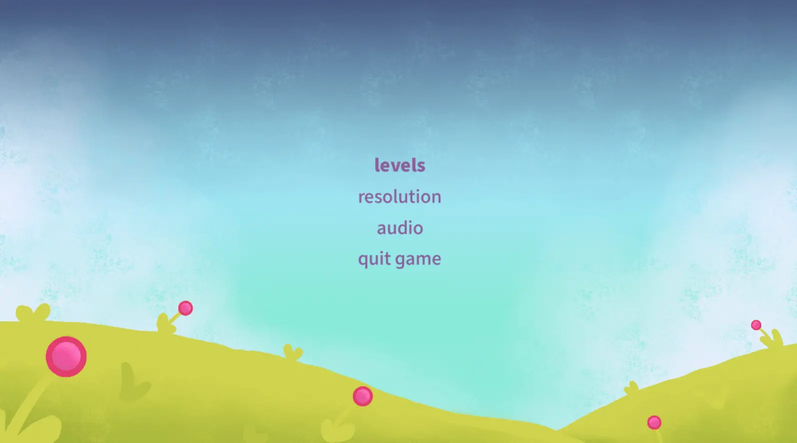
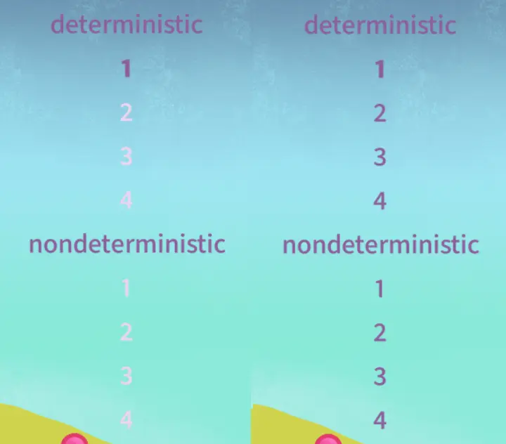
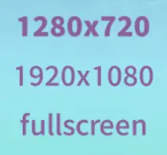
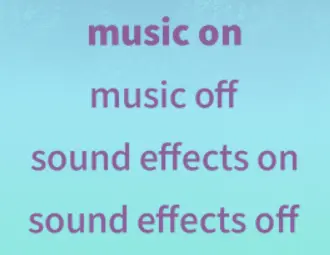
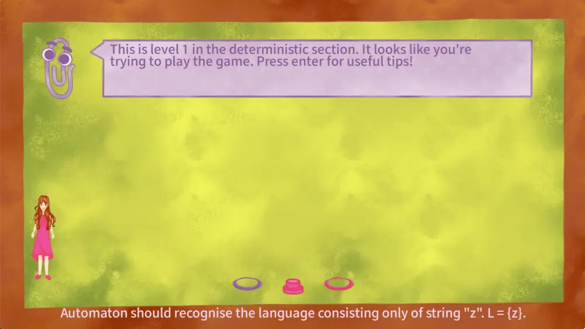
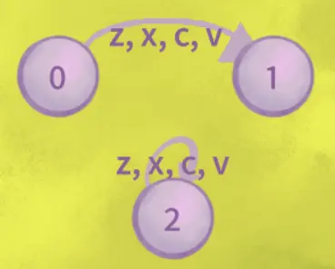
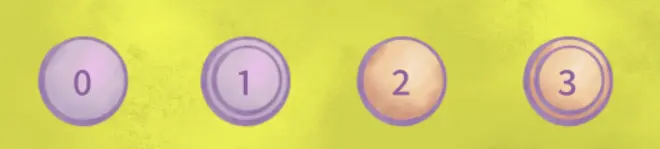
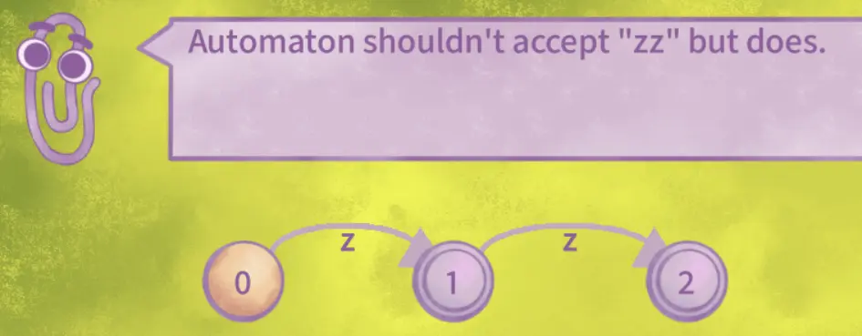
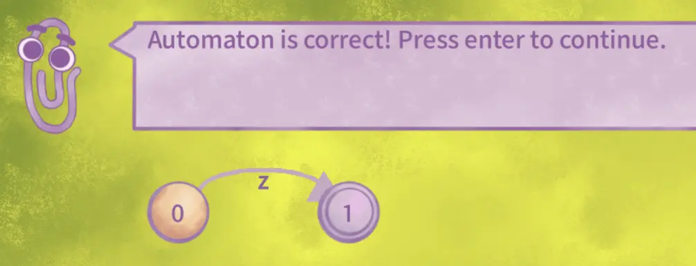
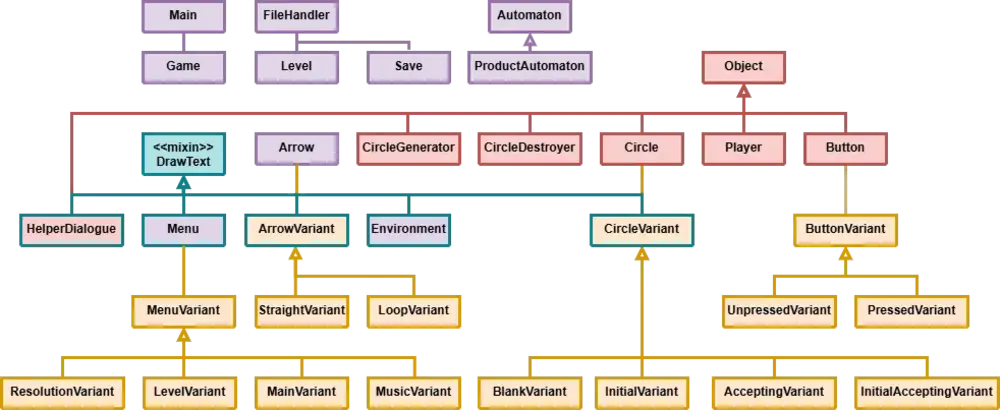

Automatontron
Logic game made in PythonAutomatontron is a logic game inspired by the Human Resource Machine game. In Automatontron, the player is tasked with constructing an automaton that recognises the language of the given level and thus progresses in the game. It can be found on my GitHub.
Menu
The game features a menu system.
Main menu
After starting the game, the main menu is displayed. The player can choose from the options for the levels, resolution, audio menus. There is also an option to "quit game".

Levels menu
The levels are divided into two sections. The first section contains deterministic automata, and the second contains non-deterministic ones. Each level introduces a new concept in automata construction. The player is tasked with creating an automaton that recognizes the language of the given level.
The levels are initially locked, but after completing one level, the next one is unlocked. The state of the level menu at the beginning and end of the game can be seen in the picture below. The goal of the game is to gradually complete all levels up to the last one and become the master of automata. In the last level of each section, the player is tasked with implementing all the concepts learned so far into one larger automaton.

Resolution menu
This menu screen allows selection of different screen resolutions. Only the background image is scaled when the resolution is selected. The other graphic elements have a fixed size. The placement of the game elements on the screen is automatically adjusted relative to the size of the selected resolution. As can be seen in the picture below, the options are “1280 × 720”, “1920 × 1080”, and “fullscreen”. If the screen is too small, some game elements may overlap in fullscreen mode and not work properly.
There is also a bug with Pygame, that sometimes, when entering fullscreen mode, it readjusts the size of the other fullscreen windows.

Audio menu
The audio menu provides options to enable or disable music and sound effects as seen on the picture.

User interface
The levels take place on a playing surface that contains user interface elements, which are depicted on the picture below. Their detailed description is as follows:
Playing surface: The background on which the game takes place.
Helper with a text bubble: A character that accompanies the player during level solving. It provides useful hints, informs the player about the correctness of their machine and warns about possible errors.
Player character: The player controls this character and interacts with the game environment. The character has animations of movement to the right, to the left, and standing still.
Circle generator: When the player stands on the generator, one circle appears.
Button: After pressing the button, the process of checking the player's automaton is started. The helper then announces whether the player's automaton is correct or incorrect.
Circle Remover: When the player steps on the circle remover, the circle they are holding is removed.

Circles, arrows, and adding symbols
When standing on the circle and pressing the "s" key, the circle variant is changed. It cycles between "normal", "accepting", "initial" and "initial-accepting" variants. The appearance of the circles can be seen in the figure below.
The key "a" controls the drawing of both arrow variants. To draw a straight arrow, the player must stand on the circle and press the "a" key. After moving to the target circle, it is necessary to press the "a" key twice. To create a loop, i.e., an arrow starting and ending in the same state, it is necessary to press the "a" key twice on one circle. The picture below shows the appearance of the arrow variants.
To remove the arrow, the "d" key can be pressed. It removes the arrow the player character is standing on.
The keys "z", "x", "c", and "v" add a symbol to the arrow the player is standing on, which can be seen on the figure below.


Automaton responses
During the levels, the player can receive useful tips from the assistant regarding new concepts in the level. The assistant also informs the player whether their automaton accepts the language of the level or if the automaton has a problem and needs to be fixed. For example, it lists the string that differs between the language of the player's automaton and the language of the level, as can be seen below.


Game completion
Upon completing the game, the player becomes a master of automata!

Technical details
Below is a UML diagram showing the class structure of the game’s code.
Class diagram
